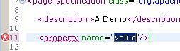
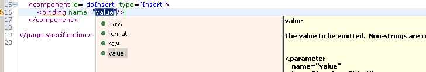
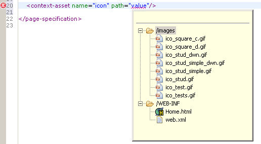

For common Spindle editor features see Spindle Editors
The Specification Editor is not a truely a generic XML editor, but rather a text editor that is tailored to working with Tapestry specification files that use the Tapestry DTDs.
That said, there are some neat features to this editor.
Whenever you type and then pause for a short period, Spindle attempts to reconcile all of the Tapestry like stuff in the file. So, if you introduce an error it will appear as annotation and when you fix a problem the annotation will disappear. XML (well formedness and validity) violations are also noted.
TIP - Reconciling a specification depends on the file having been successfully visited by the Spindle builder. If no annotations appear, this is a clue that that Tapestry would not "see" the file at runtime and throw an exception. It may also be the case that the file is in a project that is not a Tapestry project.
The Specification editor is an XML editor with full tag and attribute completions.
start a tag and hit Ctrl+Space to invoke syntax completion:

Choosing a suggestion inserts it into the text as a smart template:

The error annotation is there because 'property' requires a 'value' attribute. Let's type 'foo', press tab then Ctrl-Space:

Which demonstrates that XML attribute completions are also available.
The Specification editor is able to provide completions in the values of your attributes by accessing the context of your application as it was gathered by the Spindle builder.
An example would be components types and thier attributes.

Any component, either provided by the Tapestry distro, or by you is available in the suggestion drop down list (as long a the Spindle builder picked up the file).
The Specification editor will also provide suggestions for the parameter bindings of an component declared in the file:

Here is a good place to note that the suggestion also shows the description of the binding and a summary of it's declaration. The information presented is dependant on it's availability in the parameters' declaration in the component .jwc file.
Some attribute values contain paths to resources in the workspace, The specification editor will provide a lookup helper window to choose the desired path.

Start typeing the name of your resource and the list is narrowed. Use the arrow keys to highlight a resource. Press enter to choos the highlighted resource. Choosing a resource causes the Specification editor to insert the correct path (according to Tapestry) as the attribute value.
Attribute values that require fully qualified class names will open the Eclipse class chooser dialog. The fully qualified name of the chosen class is inserted.
| Keybinding | Description | Notes |
| F3 | Open Declaration | Open an editor on the element the cursor is on. Includes class names, components and component parameters. |
| (Ctrl-O) | XML based Quick Search | find things fast in large documents |
| (Ctrl-F3) | Tapestry based Quick Search | a more compact search that doesn't show all the XML markup |
| (Ctrl-Shift-F) | Markup Formatting | |
| Alt+F6 | Jump to Template | Important notes about jumping in general** |
| Alt+F8 | Jump to Java class | |
| Ctrl+Alt+Arrow Keys | Navigate between XML attributes |
** Jumping (Alt+F6 and Alt+F7) are also available in the Java Editor. Note that jumping from a binary file or binary class to another binary file (binary means located in a jar file) is not possible. This is not a limitation of Spindle. Rather it is a limitation of Eclipse. Lastly, jumping depends on the project having been built without fatal errors and the current file being edited has been seen by the Spindle project builder.